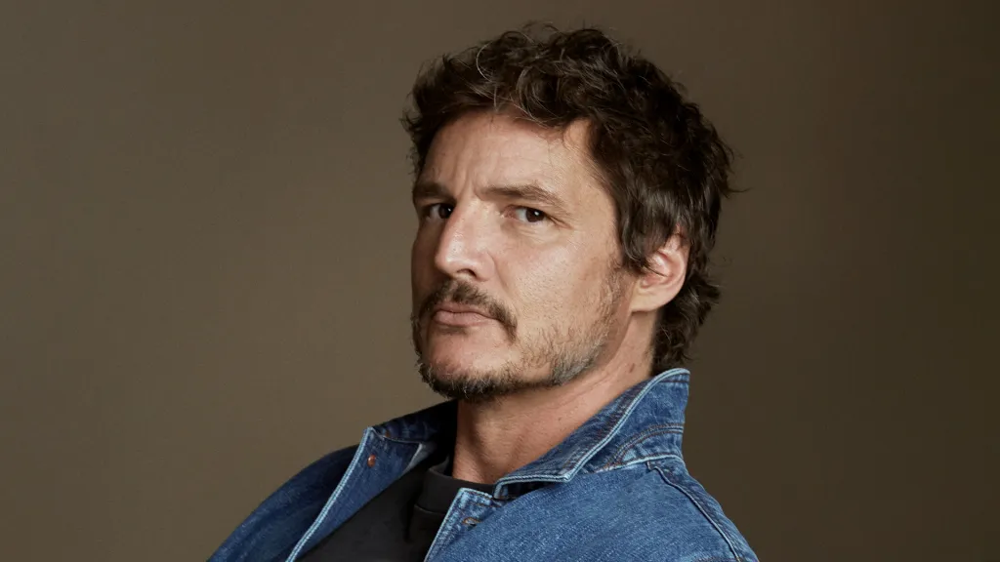
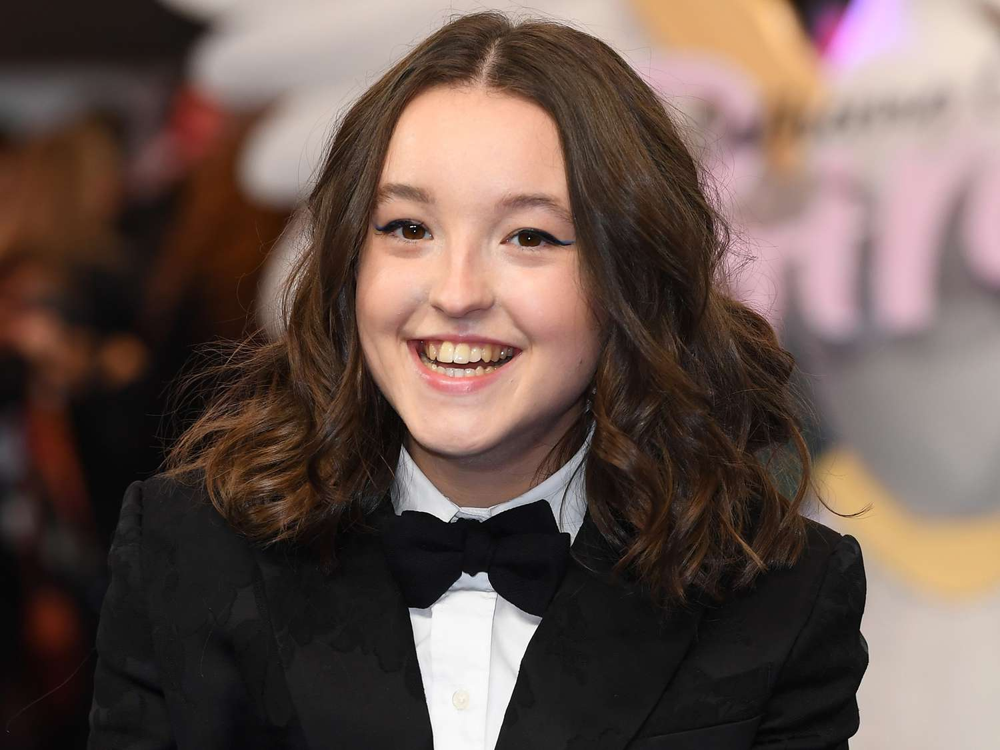

After a global pandemic destroys civilization, a hardened survivor takes charge of a 14-year-old girl who may be humanity's last hope. Pedro Pascal (The Mandalorian, Wonder Woman 1984) and Bella Ramsey (HBO's His Dark Materials and Game of Thrones) star as Joel and Ellie.
The Cast of The Last Of Us

Pedro Pascal
Pedro Pascal is a Chilean-born actor. He is best known for portraying the roles of Oberyn Martell in the fourth season of the HBO series Game of Thrones (2011), Javier Peña in the Netflix series Narcos (2015), the titular character in the Disney+ series The Mandalorian (2019) and Joel Miller in the HBO series The Last of Us (2023).

Bella Ramsey
Bella Ramsey made their professional acting debut as fierce young noblewoman Lyanna Mormont in Season 6 of HBO's Game of Thrones, a role that quickly became a fan favorite and saw Bella return for the next 2 seasons. Bella will be returning to HBO as the leading role of 'Ellie Williams' in their new flagship show The Last of Us opposite Pedro Pascal. Bella is also known for playing the titular character Mildred Hubble in the newest adaptation of The Worst Witch for which they won the Young Performer BAFTA in 2019. Bella lends their voice to Hilda, an award winning animation series for Netflix. Bella was recently on screens in the second season of BBC/HBO's adaptation of His Dark Materials.